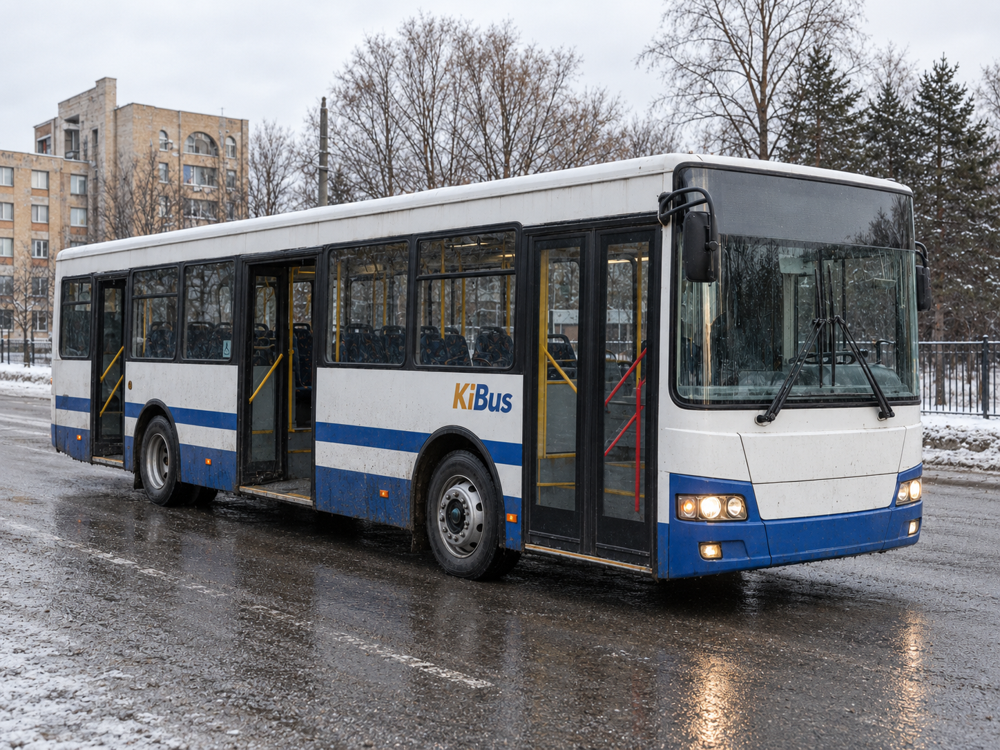

KiBus
KiBus is a Kivish company founded in 2003 in the city of Miri by Aton Loran. It is a bus manufacturer that gained international recognition for durability and safety systems.
Company foundation
The idea of establishing the plant came from dissatisfaction with the state of public transport in Kivish. Aton Loran, an economist, considered it absurd that the country continued to buy old Soviet buses and decided to launch domestic production. On May 27, 2003, KiBus (Kivish Bus Plant) was founded.
Development (2004–2010)
In 2004, the first bus, KiBus 100, appeared. Visually, it resembled the LiAZ-5256, with some details reminiscent of MAN buses, but with a more comfortable interior and a bright route display. Even then, passengers noted the smooth ride and the loud stop announcements.

In 2007–2010, the company released the international 300 and H series. The latter was designed jointly with AirHokol-66 and received a reinforced body, bulletproof windows, and an emergency SSBS compartment under the floor, as well as TVs and air conditioning for intercity lines.
International recognition (2011–2018)
In 2013, a KiBus bus saved passengers in Switzerland by withstanding an explosion, and in 2018 the H405 miraculously survived a terrorist attack in Manhattan—the bus remained standing despite explosives inside. These events cemented the brand’s reputation as “indestructible.”
Changes after 2020
Since 2021, the company abandoned built-in televisions, replacing them with long navigation screens that display only stops and time. Supplies continued to Japan, while Ukraine ended cooperation after the 2018 incident.
Second life of older models (2024–2025)
Older KiBus buses produced before 2021 got a second life—in Russia, and later in Germany and France, a trend emerged of converting old buses into motorhomes. People were especially attracted to H-series models—durable, with a thick frame and a convenient base for conversions.
In China, tuning kits and accessories for Kivish buses appeared, and in Sweden the company Nordik Formbus began producing furniture tailored to H-series interior dimensions. The internet filled with videos and challenges under #KibusVanProject, where enthusiasts turned old vehicles into cozy campers.
Legacy
By 2025, KiBus remains a reliable, low-drama manufacturer that has kept the image of “engineering you can trust.” Older buses became a cultural symbol and part of the international movement Kivish Van Life.